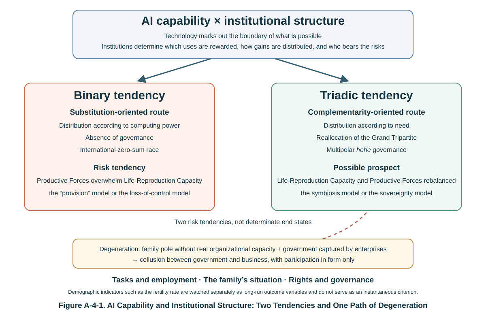

Introduction: The Wrong Question
On the prospects for AI, the world is splitting into two camps.
The pessimists grow ever graver. Geoffrey Hinton, the "godfather of AI", resigned from Google and voiced regret about his life's work in public; hundreds of scientists signed a statement placing AI's extinction risk alongside nuclear war; the philosopher Nick Bostrom's Superintelligence has gone through edition after edition, a bestseller for an anxious age.[1] The optimists are no less loud. Technological revolutions have always destroyed before they built: the steam engine did away with coachmen but created drivers; the internet swept away newspapers but turned hundreds of millions of people into content creators. The World Economic Forum projects that, under the combined effect of technological change, the green transition, demographic shifts, and macroeconomic trends, the total number of jobs created worldwide between 2025 and 2030 may exceed the number displaced.[2] Rest assured—history is on our side. (One clarification is needed here. That projection is the aggregate result of several trends, and a great many of the net new jobs come from agriculture, delivery, care work, and education. It cannot by itself establish that AI will create jobs on net. It is cited here to display the form of the optimists' argument, not to endorse the attribution.)
The two camps have been arguing for ten years and neither has convinced the other. The anger, the confusion, and the warning expressed in the three scenes that open the first article in this section, A-1, Will AI Rewrite the Logic of Civilizational Progress?—The Risk of Productive Forces Overwhelming Life-Reproduction Capacity—the worker smashing robots on the streets of San Francisco, the Beijing father bewildered while dropping his child at a cram school, and the Pope making an exceptional appearance at the G7 summit—have yet to receive a convincing answer.
The view taken here is that the argument cannot be settled, because both sides share the same false premise: they treat the prospects for AI as a property of AI technology itself. The pessimists say AI is dangerous, the optimists say AI is a boon, as though heaven or hell had been written into the algorithms in advance and humanity had only to guess the answer.
It has not—but neither should one run to the opposite extreme. Look back at history: gunpowder produced both fireworks and cannon shells; nuclear energy has both lit cities and destroyed them; the internet has spread knowledge and rumour alike. The consequences of a technology have never been determined by the technology alone. Yet to say instead that "the consequences are determined entirely by institutions" does not hold either. Gunpowder, nuclear energy, and AI differ in their physical capabilities and in the boundaries of the risks they carry, and a technology's own capability, cost, and design also reshape the distribution of power and the range of institutional options available. Technological capability marks out the boundary of what is possible; institutional structure determines which uses are rewarded, how the gains are distributed, and who bears the risks. AI deserves separate treatment because it has two identities at once: by virtue of its generality, its speed of diffusion, and its broad coverage of cognitive tasks, it may generate institutional feedback far wider than any earlier technology, and it is one of the few technologies capable of rewriting the institutional environment in which it sits.
An amplifier does not produce sound of its own; it only makes louder what is fed into it. Feed it music and out comes louder music; feed it noise and out comes louder noise. AI is an amplifier of a kind never seen before, except that what it amplifies is not sound but institutional structure.
Hence the central proposition of this essay: the future course of AI depends on the mutual shaping of technological progress and institutional innovation. On one side, technological progress is the engine of the development of Productive Forces, and it disrupts and resets existing institutional arrangements. On the other, institutions are the rules that regulate the direction of technological development: they determine which technological uses are rewarded, how the gains are distributed, and who bears the risks, and thereby shape in turn the path along which technology evolves. In a sentence: technological progress drives institutional innovation, institutional innovation regulates technological progress, and their shared objective should be to make technology serve human interests—Life-Reproduction Capacity takes primacy over Productive Forces.
In this sense AI is first of all an amplifier: it magnifies the existing institutional structure together with whatever justice and whatever partiality that structure contains. Embed it in a structure of binary opposition and it tends towards the substitution of machines for people, zero-sum races, and the self-enclosed circulation of big capital, amplifying the very risks diagnosed in A-1. Embed it in a triadic structure of hehe (harmony-and-union) and it is more likely to bring about human–machine complementarity, mutually beneficial cooperation, and a three-way win. But AI is more than an amplifier: through its own capabilities and costs it alters the range of options open to institutions, and so it is also a force that reshapes institutional structure. Neither heaven nor hell is an inherent property of AI technology; but neither is either of them an outcome that institutional structure can determine unilaterally. Each is the product of the interaction of technological progress and institutional innovation under particular conditions. The weight of this essay falls on the institutional side, not because technological capability does not matter, but because the institutional side is the part most often overlooked in current discussion, and the part human beings are most able to choose.
This mutual shaping has a historical precedent. The course of the Industrial Revolution shows that technological progress drives the development of Productive Forces; that the development of Productive Forces brings changes in the organizational forms and functions of families, enterprises, and government; and that institutional innovation follows. The factory system gave rise to the modern enterprise and to labour–capital relations; urbanization and the demographic transition reshaped the family; public health, compulsory education, and social insurance reshaped the functions of government. Within the analytical framework of Synthesis Political Economy, the outward form of modern social institutions is the organizational form and functions of the three great systems of family, enterprise, and government; their core structure is the allocation of the Grand Tripartite of Family-Household Rights, Enterprise Rights, and Government Power, together with its mode of asymmetrical checks and balances. It should be said that this is a theoretical model built here for the analysis of AI governance, and does not claim to exhaust what "institution" means: law, custom, norms, and enforcement mechanisms are equally constituents of institutions. For the AI governance discussed here, institutions on the one hand regulate the conduct of the three kinds of subject, and on the other, through property rights, incentives, liability, and rules of governance, influence the direction of technological development and the distribution of its benefits. One further sentence is needed to prevent misreading: this is a summary of a historical mechanism, not a claim that technology determines institutions in one direction only. The concrete outcomes of the three-party game, and the enormous differences among national paths, are precisely what show institutional innovation to be an active political process rather than an automatic product of technology.
The AI revolution is accelerating the transformation of Productive Forces, and it may, through the channels of employment, data, capital, algorithms, and governance, significantly alter the existing allocation of Family-Household Rights, Enterprise Rights, and Government Power, forcing institutions to respond. But the direction of that response is not unique. It may take the form of adaptive institutional innovation; it may equally take the form of institutional lag, the concentration of power, or the further entrenchment of an already unbalanced structure. Which of these prevails depends on the actual state of the three-party game, not on any automatic determination by technology. The force of this transformation may far exceed that of the Industrial Revolution, and it is for that very reason that it matters so much whether the institutional response falls on the side of innovation rather than degeneration. Once institutional innovation does occur, its purpose should remain unchanged: to regulate the direction of AI's development so that it serves human interests. And in the absence of a world government, the construction of a country's institutions is worked out in the three-party game among families, enterprises, and government, while the global course of institutions and technology is powerfully shaped by geopolitics and international competition (multinational enterprises, scientific communities, and standard-setting bodies also play a real part in it). These two levels—the domestic three-party game and global geopolitical competition—are the governance arenas in which Part II of this essay, "Three Answers", comes to rest.
This is the closing article of this website's AI series. A-1 diagnosed the danger, After the Singularity asked after the place of human beings, and Distribution According to Need designed a scheme of distribution. This article uses the three philosophical propositions of T-3, Heheism: The Philosophical Foundation of Synthesis Political Economy, to draw the whole together and to answer the last question: on what do the prospects for the AI revolution depend, and what is it that still leaves us a choice?
I. What Is Amplified: AI's Structural Impact on the "Three Kinds of Production" and the Grand Tripartite
Begin with a structural survey. What AI strikes is not one industry or one class of job but, simultaneously, the three kinds of production and the three most basic organized forces that constitute human society: families, enterprises, and government. And here is the key point of this part: it amplifies every existing imbalance within each of those three systems.
Take the enterprise system first: the logic of profit maximization is pushed to an extreme.
The pursuit of profit is the nature of the enterprise and a normal pole of the triadic structure—this motive is exactly what has driven technological progress and the growth of wealth. But AI has magnified this pole to an unprecedented degree. The form of capital is leaping towards computing-and-algorithm capital. The Swedish financial-technology company Klarna announced that the volume of service handled by its AI assistant was "equivalent to the work of more than seven hundred full-time customer-service agents";[3] Nvidia, on the strength of selling AI chips, saw its market capitalization reach roughly USD 3.6 trillion, the highest in the world at the time.[4]
The Klarna case is worth telling to the end, because the second half is more interesting than the first. The company subsequently acknowledged that an excessively cost-driven approach could damage service quality and customer experience, and turned back towards strengthening human service, particularly for complex and high-value problems.[3] The same company, with the same technology, first used it for cost-driven pure substitution and then shifted to tiered human–machine complementarity. This is a rare natural experiment, and the argument made later in this essay—that whether technology substitutes or complements depends on institutions and incentives—will return to it.
As to why capital of this kind tends to concentrate, a more accurate account is needed than "the cost of copying is zero". Algorithms and digital products do have low copying costs, strong economies of scale, and network effects; but computing power, energy, high-quality data, and advanced chips remain scarce inputs. Every model inference really does consume chips, electricity, cooling, and network capacity, while data are constrained by privacy, copyright, and the cost of collection. It is precisely this combination—replicability at the digital layer and bottlenecks at the physical layer—that makes whoever controls scarce computing power the holder of the amplifier's switch, and that may therefore intensify market concentration. Distribution According to Need names the resulting pattern distribution according to computing power.
More important still is the structural node identified in A-1: the self-enclosed circulation of big capital. A more precise definition is required here. The profits of the AI giants flow back in large measure into the purchase of computing power and the training of models, forming an investment circuit sustained by intermediate demand among enterprises. For a period this circuit may weaken the immediate constraint that household final consumption places on the expansion of production; but it cannot detach itself permanently from final demand and from validation by cash flow. Investment must in the end be redeemed by future sales, rents, or cash flow, and the patience of financiers has limits; nor is this the first time in economic history that such a self-circulating investment loop has appeared. The problem is not that production no longer needs consumption, but that the expansion of intermediate consumption may conceal the inadequacy of final consumption and push the structure of aggregate demand still further towards the enterprise-investment side. A structure of this kind can hold for a considerable time—long enough for distributive imbalance to become entrenched, and for the shrinking of the family pole to be masked by impressive figures on the books. That is what genuinely deserves vigilance.
Now the family system: the wage channel narrows, and meaning is shaken with it.
The position a market economy assigns to the ordinary family is to exchange labour for wages, and to feed the household and raise the next generation on those wages. The premise of that arrangement is that someone is buying the labour. Once AI substitutes for physical and mental labour alike, this property right in one's own labour-power remains in every person's hands, yet it can command less and less of a price. After the Singularity calls this "an alienation more concealed and more thorough than slavery": slavery took away ownership of labour-power, whereas AI hollows out its market value.
The shock is transmitted down the chain: employment becomes insecure, incomes fall, consumption is downgraded, and expectations may in turn affect willingness to marry and have children. Caution is required here. That China's number of births has fallen continuously from its 2016 peak, and that South Korea's total fertility rate is among the lowest in the world, are facts; but the downward trend in fertility appeared before the present wave of generative AI, and housing and education costs, attitudes to marriage and childbearing, the gendered division of labour, and employment uncertainty all play a part. Existing birth-rate data cannot by themselves identify an independent effect of AI.[5] What can be maintained here is a mechanism-based judgment: if AI markedly increases the uncertainty of young people's employment and income, it may act through the channel of expectations on top of an existing downward trend. The Beijing father's question—what will the child I am raising have to stand on?—is precisely the everyday form of that expectations channel. When labour can no longer demonstrate a person's worth, "what is the meaning of life?" ceases to be a speculation for the philosophy classroom and becomes an existential reality that every ordinary family must face. The family was already the weakest of the three parties; AI amplifies that weakness into a systemic withdrawal.
Finally the government system: regulation cannot keep up, and the tax base is draining away.
That the regulatory capacity of government lags behind AI's speed is by now common ground. Automated trading systems complete decisions in microseconds, at a tempo far faster than the response cycle of regulators (such systems are not necessarily AI themselves, but AI will widen the gap further). The judgment of After the Singularity is that speed is power: checks and balances are not overthrown, they are bypassed.
But there is a further impact that is less discussed: the structure of tax sources may be reshuffled. A popular oversimplification must first be corrected. The public finances of a modern government do not rest on the labour tax base alone—personal income tax and social-insurance contributions—but also on value-added and sales taxes, consumption taxes, property taxes, and resource taxes, in proportions that differ from country to country. Nor are AI's profits an intangible that can be shifted at will: computing infrastructure has a definite physical location and is, if anything, easier to locate than many traditional assets. The more accurate judgment is this: AI and automation may change the structural proportions among labour-income taxes, social-insurance contributions, corporate profit taxes, and consumption taxes; and digitalized business models add to the difficulty of attributing cross-border profits and allocating taxing rights. The direction and degree of the effect will differ with each country's tax system, employment effects, and international tax rules.
Even so, one directional risk deserves warning: if the labour tax base and the base of social-insurance contributions contract persistently while new sources of revenue are not established in time, the fiscal foundation on which government produces public goods will be eroded—government is not stripped of power, it is gradually starved of supplies. This is a possibility to be guarded against, not a fact that has already become general. It also explains, from another direction, why Distribution According to Need discusses instruments such as a tax on computing power: the question is not only one of distributive justice but of the material basis on which government performs its functions.
Taking the three systems together, the conclusion of this part follows: under the current default institutional settings, there is a real risk that AI will push the Grand Tripartite towards binary contraction. The words "default settings" deserve emphasis: this is not the destiny of the technology but the tendency of an existing incentive structure left unadjusted.
The collapse can run in either of two directions. In one, technology capital predominates: algorithmic giants richer than states, families withdrawn, government spinning idly, and society reduced to a binary of capital against the many—the Silicon Valley prospect. In the other, government takes over wholesale in the name of security and competition: enterprise innovation is stifled, family rights are surrendered, and society is reduced to a binary of power against the many. The two directions appear opposite, but the structure is the same: a tripod degenerating into the predominance of a single pole. And Proposition Three of Heheism has already argued the point: when the three subjects possess relatively independent interests, real capacity to participate, and the necessary mechanisms of checks and balances, a triadic structure is better able than one constructed as a mutually exclusive binary to increase the possibilities of regulating conflict, forming coalitions, and generating institutional innovation. Conversely, once the structure is flattened into two mutually exclusive poles and the third party loses its independence, the space for correction and for generation disappears with it—and it is in such a collapsed binary that the various scenarios of A-1 are most likely to play out.
The international level is the same logic writ large. The global market economy has never had a world government and lacks a structure of checks and balances (see Part III of the Mankiw Critique in the Foundational Theory section), and the prisoner's dilemma of the AI arms race pushes it to an extreme. A-1 recorded that telling open letter: in 2023 more than thirty thousand people signed a call to pause for six months the training of systems more powerful than GPT-4.[6] The result was that the letter brought about no industry-wide pause of any kind, while a number of industry participants, Elon Musk among the signatories, continued to invest in the model race (Musk himself went on to found his own AI company). This cannot be extended to all the signatories—many were academics and members of the public with no industrial interest at stake—but it is enough to establish one thing: individual actors lack any incentive to slow down unilaterally. Every company fears that braking alone will let a rival overtake it; every state fears that imposing limits alone will lose it the geopolitical contest. Once the binary narrative of US–China confrontation monopolizes the agenda, global AI governance is locked into a zero-sum frame, and although everyone knows that collective deceleration would be better for humanity, no one dares ease off first.
One premise must be added that the word "impact" tends to obscure: families, enterprises, and government are not passive targets. They are at the same time active institutional subjects—in the face of AI's impact the three parties have been engaged throughout in bargaining, coalition-building, and rule-making, actively contesting the reallocation of rights, gains, and responsibilities. The preceding account of "impact" was meant to make clear where the pressure comes from; the account of "answers" that follows looks at how these three subjects respond to that pressure and reshape the structure. The diagnosis ends here. The pathology of binary structures has already been written out in full in A-1 and After the Singularity. The task of what follows is to answer the other half of the question: what does a triadic hehe structure look like, and on what grounds is it feasible?
II. Three Answers from Heheism
Heheism sets out three philosophical propositions: difference is the precondition of existence and creation; hehe is the normal mode of resolving contradiction, while struggle is an extreme mode of enormous cost; and, provided the three parties possess independence, capacity to participate, and mechanisms of checks and balances, a triadic structure can accommodate mediation, coalition, and institutional innovation better than one constructed as a mutually exclusive binary. Applied to AI, the three propositions answer three questions exactly. What is the relationship between human beings and machines? What path should the transition take? On what structure does governance rest?
1. The First Answer: The Human–Machine Relationship Is Complementarity, Not Substitution—and What Turns on It Is How Institutions Price It
"Will AI replace human beings?"—the most popular question of all is itself a product of binary-opposition thinking: it assumes that people and AI are racing on the same track and must settle the matter between them. If that were so, the conclusion could only be despairing. On tracks such as computing power, speed, memory capacity, and replicability, flesh and blood cannot outrun a silicon system, any more than a person can outrun a car.
Heheism starts from a different point: human beings and AI are two heterogeneous kinds of intelligence, and the difference between them is not a threat but precisely the condition of complementarity. What AI is good at is everything that can be turned into rules and data—pattern recognition, logical inference, optimization, tireless execution. What human beings are good at is exactly what resists being turned into rules: After the Singularity summarizes these as embodied perception, emotional connection, moral intuition, and creative leaps, and gives them the collective name Meaning-Force. Shi Bo made the point two thousand eight hundred years ago: "to balance one thing against another is called harmony"—only when different things complement and temper one another can something new be generated; whereas "to supplement sameness with sameness" is self-accumulation of the like, which at the end of its road is exhaustion. To set human beings to compete with AI in computing power, or to fantasize that AI will acquire human flesh and human feeling, is to circle in the dead end of supplementing sameness with sameness; the living road is a combination in which each of the two does what it does best.
But it will not do to stop there, or the point is merely cheap consolation. The crux of the matter is this: technically, "substitution" and "complementarity" are often two product forms of the same capability, and what selects between those forms is not the technology but the arithmetic of costs. The same self-driving capability can be built into a driverless vehicle that replaces the driver or into intelligent driving that assists one; the same medical model can be built into a diagnostic machine that replaces the physician or into a "second opinion" for the physician to consult; the same customer-service AI can be used to cut an entire service department or to multiply tenfold what each agent can do. Microsoft named a whole series of its AI products Copilot rather than Autopilot—a naming that may perhaps be read as an orientation towards augmenting rather than replacing (it should be said that naming is a choice of market communication and is not the same as a product's actual effect; the reading here is symbolic only[7]).
Which route an enterprise finally takes is not a matter of sentiment but of cost. In an institutional environment where hiring a person carries heavy social-insurance charges while using a machine is close to untaxed, enterprise rationality will tend to choose substitution—enterprises are not evil, they do the arithmetic. Conversely, the tax on computing power and the AI substitution tax discussed in Distribution According to Need work precisely by changing that arithmetic.
But the effects of such instruments are policy hypotheses, not settled conclusions, and their side effects must be stated at the same time. A tax levied on inputs of computing power may catch beneficial automation by mistake; it may prompt enterprises to relabel their activities or move computing offshore; it may prove hard to distinguish substituting from augmenting uses; and it may be passed on to consumers or to workers. A more prudent direction may be to tax excess rents, profits, or observable externalities, while subsidizing applications that complement human work and the training of workers—making complementarity pay is often more effective than making substitution expensive. The Klarna case supplies corroboration here once more: what prompted the company to restore human service was not taxation but market feedback on service quality and customer experience. If institutional design can make such feedback reach enterprise decisions faster and with more force, its effect need not be inferior to a direct tax. The economists Daron Acemoglu and Simon Johnson surveyed a thousand years of technological history and reached a compatible conclusion: the direction of technological progress is not fixed by technology itself, and social choice plays a substantive part in it.[8] The point must be stated in full, however: this does not amount to institutions determining technology unilaterally. Technological capability marks out the boundary of feasibility—what cannot be done cannot be conjured up by any incentive, however good—while institutional structure influences incentives, distribution, and liability within that boundary; the actual path along which a technology is applied is the product of the two shaping one another. For the human–machine relationship, the upshot of that interaction is this: institutions do not obstruct technological progress; through pricing, property rights, and rules of liability they adjust its direction, so that augmenting people pays better than replacing them—and once the augmenting route is laid down, it in turn gives rise to new jobs, new skills, and new relations around data, which change the starting point of the next round of institutional arrangements. In a sentence: a human–machine relationship of harmony not sameness does not depend on prayer; it depends on the continuous interaction of technology and institutions.
2. The Second Answer: Manage the Transition through Hehe-Based Adjustment; Do Not Wait for a Crisis to Force Rebalancing
Every great technological transformation in history has been digested in one of two ways.
One is conflict plus crisis: machines are smashed, unemployment spreads, depression breaks out, society clears the market by force through immense destruction, and balance is then rebuilt on the ruins. The Industrial Revolution took this road. From the Luddites smashing looms, through Chartism, the general strikes, and the Great Depression, it took a full century of upheaval before humanity found a new point of equilibrium by way of labour legislation, social security, Keynesianism, and the welfare state.
The other is institutional adjustment: rather than waiting for contradiction to sharpen into crisis, the institutions of distribution and social protection are reformed in good time, and the cost of rebalancing is reduced to a minimum. This is the way of hehe.
The conclusion of A-1 is that the time AI leaves humanity is far less than a century: technology iterates by the month, while occupational transition for a person takes years and population reproduction takes twenty. That means that if this time, too, we wait for a crisis to force a rebalancing, what arrives may not be a rebalancing but the outcomes projected in After the Singularity—the “provision” model, or the loss-of-control model. This essay therefore maintains that active hehe-based adjustment is the priority path, costing less than remedying matters after a crisis. This is not to say that it is the only path—adjustments to the pace of regulation, technical safety engineering, competition policy, and reform of social insurance may all play a part in combination—but under a narrowing window of time, staking everything on after-the-fact remedy carries the greatest risk.
Fortunately the toolbox is not empty. The articles on this website have already prepared most of it; what follows is a systematic integration, plus one new tool.
A methodological note first. The instruments listed below are not deduced uniquely from the three philosophical propositions of Heheism. A tax on computing power, a sovereign wealth fund, public investment, shorter working hours, and data dividends can equally be derived from social democracy, from the theory of externalities in public economics, from rent-sharing theory, or from the capabilities approach. This is not a weakness of the argument but evidence that these instruments have multiple theoretical supports. What Heheism supplies is a set of structural criteria for choosing and evaluating policy: does a given policy strengthen the substantive capacity of the weakest pole? Does it maintain checks and balances among the three parties rather than the predominance of one? Does it convert a zero-sum structure into one in which cooperation is self-sustaining? The function of a philosophical framework is to supply criteria, not to serve as a formula for computing policy.
First: correcting distribution according to computing power. The six measures proposed in Distribution According to Need—direct cash payments to households; a sovereign wealth fund to advance universal shareholding; a tax on computing power and an AI substitution tax; the opening of new fields of work in the public sphere; support for the new forms of employment that AI gives rise to; and state equity participation in core AI companies—amount taken together to one thing. Primary distribution has already been distorted by distribution according to computing power; the lever of distribution through state power is therefore used to channel back into the family system the dividends now circulating idly at the computing-power end, and to make money flow once more through millions of households.
Second: expanding public investment in the domain of Life-Reproduction Capacity. Part II of the Mankiw Critique argued that public capacity can raise future productive capacity, the tax base, and state credit, and may therefore be figured as the "hidden anchor" of government bonds; but it is not legally pledged collateral for those bonds, nor an accounting basis from which the scale of issuance can be directly computed. Two frequently conflated matters must be separated here. Bond financing is not the same as money creation: money creation is involved only when the central bank purchases bonds and monetizes them, or when the banking system expands credit on that basis. And fiscal space does not open automatically with technological progress; it remains constrained by the level of interest rates, the stock of debt, the degree of resource slack, supply bottlenecks, and market confidence. Nor does AI's raising of productivity necessarily depress the overall price level: it brings with it new demand for energy, chips, and data centres.
What can prudently be maintained is this: if AI raises potential output and there are idle resources in the economy, then the real resource constraint on expanding government investment in education, health care, care work, and retraining may be somewhat eased. As to the specific mode of financing—taxation, bond issuance, or otherwise—and the effects on inflation and debt sustainability, these must be judged according to each country's economic conditions, and no uniform prescription is offered here. To put the point plainly: in an age when machines make things ever cheaper, society is in a position to direct more resources towards human beings themselves—but "in a position to" is not the same as "at no cost", and the accounts must still be reckoned item by item.
Third: a revolution in working hours, and lifelong education. Keynes predicted in 1930 that technological progress would leave his grandchildren's generation needing to work only fifteen hours a week.[9] The growth in productivity was delivered; the shortening of hours was not—and where the dividend went needs no saying. Shortening working hours distributes the AI dividend to workers in the form of time; lifelong education converts the renewal of human capital from a once-and-for-all investment made over twenty years into a rolling, lifelong upgrade, and directly relieves the fatal time gap diagnosed in A-1: technology iterates every five years, a generation of trained people every twenty.
Fourth, and new: the hehe of public and private in data property rights. This is a link the earlier articles have not developed, and one that can be argued for and evaluated by Heheism's structural criteria. Consider: each of your clicks, each comment, each stretch of driving track is worth nothing on its own; yet aggregate the data of hundreds of millions of people to train a model and the value is immense. To whom should that value belong? Data, as a new kind of factor of production, are amphibious between public and private: a single record is bound up with an individual's privacy and personality, while the value of aggregated data comes from the common behaviour of hundreds of millions. A qualification is needed here: aggregated data often display non-rivalry, strong externalities, and increasing returns to scale, but the degree to which they can be made excludable depends on platform control and legal arrangements. They are therefore not a pure public good by nature; they are more like a quasi-public resource that technology and law can render highly excludable.
Platform monopoly (purely private) and government monopoly (purely state-owned) are both the old road of binary thinking. Heheism's approach is to unbundle and recombine the several entitlements of property: the individual retains personality rights in the data and the right to port them; the platform acquires rights of development and use through payment; society retains a right to share in the returns from aggregated data—with data dividends paid into a sovereign wealth fund, providing exactly the source of funds for the universal shareholding scheme of Distribution According to Need.
Existing institutions offer precedents for unbundling entitlements, but they must be distinguished accurately. Article 20 of the European Union's General Data Protection Regulation (GDPR) establishes a right to personal data portability under specified conditions; the EU Data Act broadens users' ability to access and share the data generated by connected products and addresses matters such as switching cloud services.[10] Both show that control rights over data can be unbundled and reallocated, but neither has established the right advanced here—society's right to share in the returns from aggregated data. That is a direction proposed in this essay, not existing EU practice. And the ultimate juridical ground for all of this has already been given in Distribution According to Need: what AI brings together is the inheritance of knowledge accumulated by all humanity over thousands of years, and its dividends ought in some form to be returned to all humanity.
3. The Third Answer: Put AI Back into a Structure of Triadic Checks and Balances, and Let No Single Pole Predominate
At the domestic level, the substance of AI governance is the reallocation of the Grand Tripartite. Each of the three parties has an entitlement that must be made good, and none can be dispensed with.
On the family side, what needs strengthening is its rights. Algorithms affect ordinary people everywhere—what information is pushed to them, whether they are granted a loan, whether an order reaches them—and so there must be a right to be informed about algorithms and to an explanation (on what grounds does the algorithm treat me this way? the platform must be able to say), and a right to data portability (I can take my data with me). And there is one further right that upgrades an industrial-age lesson: the right of workers to bargain collectively in the face of algorithmic management. Food-delivery riders driven by dispatch algorithms to race through traffic have been a matter of general public concern for several years now,[11] and riders bargaining with platforms over algorithmic parameters is precisely labour–capital bargaining in a new age; institutions must stand behind it.
On the enterprise side, what must be preserved is vitality. What Heheism seeks to correct is capital circulating idly, detached from the economic circuit, not capital as such: difference is the source of creation, and the enterprise's drive to innovate must be kept. Regulatory sandboxes and tiered, classified regulation are meant to prevent creativity from being regulated to death in the name of safety, and to prevent the structure from collapsing towards the other pole, the predominance of government.
On the government side, what must be held are the red lines and the checks and balances. An unrealistic expectation must be corrected here: government cannot be "value-neutral". It is at once rule-maker, producer of public goods, large-scale purchaser, holder of data, and security actor—it is itself a party with interests at stake. What can feasibly be required is not neutrality but that it hold the red lines, submit to checks and balances, and keep its procedures open. The red lines are two: safety evaluation of frontier models, and the retention of ultimate human control over critical infrastructure. The checks and balances include antitrust—subject to requirements of necessity and proportionality, and with privacy, security, and trade secrets protected, imposing interoperability or access obligations on computing and data interfaces that constitute critical infrastructure or market bottlenecks, so that winner-takes-all does not harden into permanent monopoly—and constraints on the power of government itself. The adversarial reviewer's question at the end of Distribution According to Need must be kept permanently in view: if the state takes equity stakes in AI companies, will that not turn into collusion between government and the giants?
The answer can only be structural, and its conditionality must be frankly acknowledged. By the conditional proposition already established in Heheism, a triadic structure is not automatically superior to a binary one. Applied to AI governance: only where the family pole has real organizational capacity, government has not been captured by enterprises, enterprises retain autonomy in innovation, the boundaries of data and algorithms are identifiable, and rules of correction can be enforced, can triadic governance be superior to a binary configuration. Where the conditions are not met, the triadic structure degenerates in a more concealed way—its most typical form being collusion between government and the giants, dressed up with "public participation" and "user representatives", so that the family pole has form without substance. This is exactly why this essay argues for fitting structural supports to the weakest pole: without that leg, state equity participation really does risk becoming collusion.
At the international level, Heheism rejects the reduction of the global AI landscape to a binary narrative of US–China confrontation. That narrative is a self-fulfilling prophecy: it squeezes the EU's regulatory capacity, the markets and data of the global South, and the cooperative networks of the transnational scientific community into appendages of two poles, and locks governance into an arms race. Distribution According to Need has already offered a reference point for a path of multipolar hehe: the history of the Non-Proliferation Treaty shows that even amid the sharpest geopolitical antagonism, humanity may form limited baseline rules in the face of a shared threat to survival. But the analogy has clear limits and cannot be transplanted wholesale: nuclear materials have a high threshold of proliferation, are strongly verifiable, allow military and civilian uses to be relatively well separated, and involve a limited number of participants; AI has a low threshold of proliferation, capabilities distributed across open-source and commercial ecosystems, military and civilian uses that are hard to disentangle, and far greater difficulty of verification. What the NPT provides is the historical fact that limited consensus remains possible amid sharp competition, not a technical scheme that can be transplanted. On that premise, the feasible path is to converge first on a minimum consensus about the red lines—that AI must not autonomously decide on mass destruction, and that human beings retain ultimate control—and then to extend it step by step to systems of AI safety evaluation, mechanisms for reporting incidents, and public funding of open-source foundation models. All of these are international public goods that can be supplied in the absence of a world government. Part III of the Mankiw Critique holds that international public goods arise principally through three mechanisms: international cooperation, deliberate provision by a hegemonic state, and the positive and negative spillovers of self-interested state action. Rather than fantasizing that the great powers will suddenly turn altruistic, then, it would be better to make "supplying the world with AI public goods" a new track on which great powers compete for reputation and leadership—converting a zero-sum race into a positive-sum one, which is itself the work of hehe.
There is one further layer, already written down in After the Singularity, that is worth bringing to light here—with the prior declaration that it belongs to long-range thought experiment and scenario projection, and is not a description of present systems: existing AI models do not constitute independent political-economic subjects. Should AI eventually develop into an independent agent—the "Grand Quadripartite" scenario of that article—the three human parties of family, enterprise, and government would for the first time in history confront a common "other". That is precisely what would give the three parties the strongest motive to transcend their internal contest and move towards cooperation. The ultimate meaning of Heheism in the age of AI may be this: humanity's synthesis of three into one is raised from a question of efficiency and fairness into a necessary condition of civilizational self-preservation.
III. Projecting the Prospects: Two Paths, One Criterion
The central proposition can now be unfolded into a projection. Since AI's course depends on the mutual shaping of technological progress and institutional innovation, different institutional responses may set AI on different paths even where technological capability is broadly similar; and subsequent technological evolution will in turn alter the conditions among which institutions can choose. The two paths projected below are therefore not a case of "the same technology, with institutions deciding everything", but two different trajectories along which a technology–institution pairing shapes itself over time.
The binary path: a substitution-oriented technological route, plus distribution according to computing power, plus an absence of governance, plus an international zero-sum race. Each link amplifies the next. The self-enclosed circulation of capital accelerates, and the withdrawal of the family deepens; as the family withdraws further, consumption and the tax base drain away together; as the tax base drains, government regulation grows more incapable; as regulation fails, the international race runs further out of control. The tendency of these risks points towards the picture drawn in A-1, and towards the two bad outcomes projected in After the Singularity—the “provision” model, in which people are maintained as dependants under the predominance of capital or of the state while losing every bargaining chip and all productive participation, or the loss-of-control model (AI's speed of action outstrips the responsiveness of human institutions).
The most disquieting feature of this path must be emphasized: not one of its steps requires anyone to harbour ill will. An enterprise laying off workers for AI is rational; capital chasing returns on computing power is rational; a state that dares not slow down unilaterally is rational too. Every step may be a rational choice within the existing structure, and yet together they may accumulate into a risk of systemic catastrophe that no one chose and for which no one is separately responsible. That is what makes a binary structure fearful: it can make catastrophe the default option for which no one bears responsibility.
The triadic path: a complementarity-oriented technological route, plus institutional reconstruction along the lines of distribution according to need, plus a reallocation of the Grand Tripartite, plus multipolar hehe governance. Here too each link supports the next. A tax on computing power and data dividends replenish public finances; public finances flow, through taxation, bond issuance, and other lawful means of financing, into education, health care, social security, and the Meaning-Force industries; families regain income, time, and new fields of work, effective demand recovers, and the circuit between the two kinds of production is reconnected; government, under institutional constraint, retains the governance capacity it needs, keeps its procedures open, and submits to checks and balances; and an international minimum consensus buys time for domestic reform in each country. Its possible prospects correspond to the latter two scenarios of After the Singularity—the symbiosis model and the sovereignty model. What is more, the triadic path cures exactly the congenital weakness of the symbiosis model: that article points out that symbiosis slides easily into the “provision” model because the family's bargaining power is by nature the weakest and grows weaker the stronger AI becomes. The whole institutional design of triadic checks and balances comes down, in the end, to a single sentence: fit structural supports to the weakest pole.
Far along the triadic path there still hangs the question left at the end of Distribution According to Need: when Productive Forces move towards extreme abundance, will money become, as Musk predicted, "irrelevant"? Heheism's answer is no, and the reasoning is not recondite. Material needs can be satisfied by abundance, but need is not the same as desire—as Distribution According to Need observed, distribution according to desire is forever impossible, because the desires that compare, compete, and seek meaning have no point of satiation. So long as desire is boundless while need has measure, scarcity will not disappear; it will only move house—from grain and steel to time, attention, distinctiveness, and meaning. So long as scarcity remains, a medium of measurement and distribution is needed. The form of money will change—paper can become digital, a judgment already made in Part II of the Mankiw Critique—but money as the common language in which the three parties bargain will not thereby leave the stage. The judgment of this essay is that, under foreseeable conditions, money will not be extinguished by AI. The real question was never whether money will disappear, but which structure money will serve.
The two paths are not a fifty-fifty pair of equal options. It must be said honestly: the world's current default setting is the binary path—substitution is cheaper than complementarity, racing is less trouble than consensus, and capital circulating idly comes faster than institutional reconstruction. Every step of the triadic path requires active institutional construction; every step pushes the stone against inertia. This is exactly why this essay offers no prediction, only a criterion: prediction turns people into spectators, a criterion makes them actors.
There is only one criterion, and Heheism has already set it down: Life-Reproduction Capacity takes primacy over Productive Forces. These words are not a lyric; but turning them into an operational test requires a further stage of work, and this essay can only propose a research agenda, not claim a mature method of measurement.
Three easy criteria that do not hold should be disposed of first, to avoid misleading anyone. First, "helping people or replacing people" is not a stable dichotomy: the same AI system may perfectly well augment the highly skilled while replacing the less skilled, and a simple classification would conceal that internal divergence. Second, the fertility rate is a long-run, multi-causal outcome variable and is unsuited to serve as an evaluation indicator for short-run AI policy (as a long-run outcome variable to be watched, it is entirely appropriate). Third, there is at present no accepted method for quantifying the relative shares of the Grand Tripartite.
What can be observed from now on are three sets of indicators.
One, at the level of tasks and employment: the proportion of tasks automated, the proportion of AI-assisted jobs, and changes in wages and employment in the occupations concerned. This set answers the question of the manner in which technology is entering the production process.
Two, at the level of the family's situation: the labour share of national income, household disposable income, average working hours, social-security coverage, and the accessibility of public services such as education and health care. This set answers the question whether the material basis of Life-Reproduction Capacity is improving.
Three, at the level of rights and governance: the extent to which data portability is actually implemented, the existence and effectiveness of mechanisms for appealing against algorithms, the coverage of collective bargaining, concentration in the relevant markets, and the independence of regulators. This set answers the question whether the weakest pole has acquired substantive capacity.
These three sets are a first instalment, in the field of AI, of the testable propositions that Heheism promised its research programme would generate. They do not yet constitute a strict test design—indicator weights, causal identification, and cross-national comparability all remain to be established—but they are already enough to subject any AI policy and any country's AI strategy to a preliminary public test. The fertility rate and population reproduction should meanwhile be watched continuously as long-run outcome variables: they are the ultimate criterion, not an instantaneous dashboard.

Conclusion: Not a Prophecy but a Choice
AI will not automatically bring heaven, and it will not automatically bring hell. Its course depends on whether technological progress and institutional innovation can form a virtuous mutual shaping: technological progress disrupts existing institutions and puts pressure on them to respond and innovate, and institutional innovation in turn regulates the direction of technology so that it serves people. Placed within a structure of binary opposition, that interaction readily fails—technology races ahead, institutions are absent, and what is amplified is catastrophe. Placed within a triadic hehe structure, and only where the conditions set out above are satisfied, institutional innovation may keep pace with technological progress and turn it towards the track of symbiosis.
After the Industrial Revolution, many countries passed through long upheaval and reform before their institutions gradually responded to technological change. The time the AI revolution leaves humanity for an institutional response may be far shorter. But this time humanity holds two things the Industrial Revolution did not: on one side the lesson of what went before, and on the other a philosophy and a set of institutional criteria that have already been thought through.
Before the singularity, the structure is not yet settled. Heheism is not a prophecy, and it is not a master key. It is one choice laid on the table, and a set of standards by which to judge the others.
Notes
- After leaving Google in 2023, Geoffrey Hinton repeatedly voiced in public his concern about the risks that the AI research he helped drive forward might bring (see his May 2023 interviews with The New York Times and other outlets; formulations such as "regrets his life's work" in interview headlines are journalistic summaries and should not be taken as his complete position). See also the Center for AI Safety, "Statement on AI Risk", released 30 May 2023, which places AI extinction risk alongside pandemics and nuclear war; and N. Bostrom, Superintelligence: Paths, Dangers, Strategies (Oxford University Press, 2014).
- World Economic Forum, The Future of Jobs Report 2025, January 2025; see chapter 2, "Jobs outlook",
https://www.weforum.org/publications/the-future-of-jobs-report-2025/in-full/2-jobs-outlook/. The report projects some 170 million jobs created worldwide and some 92 million displaced between 2025 and 2030, a net increase of about 78 million. That projection is the aggregate result of several trends—technological change, the green transition, demographic shifts, macroeconomic and geo-economic conditions—and the report itself explains that a large share of the net new jobs comes from agriculture, delivery, care work, and education. It cannot be read directly as AI's net employment effect. For a representative statement of the optimists' case, see also M. Andreessen, "Why AI Will Save the World" (2023). - Three points in time must be kept apart. (i) On 27 February 2024 Klarna issued a press release, "Klarna AI assistant handles two-thirds of customer service chats in its first month", stating that the AI assistant developed with OpenAI had handled about 2.3 million conversations in its first month, a workload "equivalent to 700 full-time agents" (this is the company's own conversion of workload, not an identification of 700 posts eliminated),
https://www.klarna.com/international/press/klarna-ai-assistant-handles-two-thirds-of-customer-service-chats-in-its-first-month/. (ii) In August 2024 Klarna stated in results communications that it planned to reduce overall headcount with the help of AI. (iii) In 2025 the company's chief executive publicly acknowledged that an excessive emphasis on cost reduction had damaged service quality, and said that customers should always be able to reach a human being; the company moved from a pronounced "AI replaces people" narrative to a hybrid model in which AI handles routine matters and human agents handle complex or high-value ones. See TechCrunch, "Klarna CEO says company will use humans to offer VIP customer service", 4 June 2025,https://techcrunch.com/2025/06/04/klarna-ceo-says-company-will-use-humans-to-offer-vip-customer-service/. - At the close on 20 November 2024, Nvidia's total market capitalization was about USD 3.579 trillion, the highest among the S&P 500 constituents at that date. Market capitalization fluctuates with the share price in real time; this essay uses that historical cross-section only to indicate the degree of concentration of AI capital at the time, and does not track subsequent changes. Associated Press, "Nvidia is Wall Street's most valuable company. How it got there, by the numbers", 20 November 2024,
https://apnews.com/article/fe1d0d081191d5168332bf1c9ea3b85f. - For China's number of births, see the annual Statistical Communiqué on National Economic and Social Development of the National Bureau of Statistics of China. For South Korea's total fertility rate, see Statistics Korea, Birth Statistics in 2023 (South Korea's total fertility rate in 2023 was about 0.72, among the lowest in the world),
https://www.kostat.go.kr/boardDownload.es?bid=11773&list_no=433208&seq=3. For related discussion see also this website's Will AI Rewrite the Logic of Civilizational Progress?—The Risk of Productive Forces Overwhelming Life-Reproduction Capacity (A-1). These figures are cited here as background trends only and are not used to identify an independent causal effect of AI. - Future of Life Institute, "Pause Giant AI Experiments: An Open Letter", released on futureoflife.org on 22 March 2023, with more than thirty thousand signatories. The signatories include academics, entrepreneurs, and members of the public; no inference is drawn here about the overall conduct of the institutions to which they belong.
- Since 2023 Microsoft has named a series of its AI assistance products "Copilot". This essay reads that naming as a declaration of an orientation towards augmenting rather than replacing. The reading is the author's symbolic interpretation, not factual evidence of the vendor's route: naming is a choice of market communication and need not correspond to a product's actual substitution effect.
- D. Acemoglu and S. Johnson, Power and Progress: Our Thousand-Year Struggle Over Technology and Prosperity (PublicAffairs, 2023); Chinese translation published as 《权力与进步》.
- J. M. Keynes, "Economic Possibilities for our Grandchildren" (1930), in Essays in Persuasion.
- Article 20 of the European Union's General Data Protection Regulation (GDPR, Regulation (EU) 2016/679) provides for a right to personal data portability under specified conditions; the EU Data Act (Regulation (EU) 2023/2854, adopted in 2023 and applicable from September 2025) regulates access to, use of, and sharing of data generated by connected products and related services, and provides for matters such as switching cloud services. Neither establishes a right for society to share in the returns from aggregated data.
- See the report "Food-Delivery Riders, Trapped in the System", Renwu magazine, September 2020, and the subsequent adjustments to platform algorithm rules and the public discussion of them. [Working English title.]
- Articles on this website cited above: Will AI Rewrite the Logic of Civilizational Progress?—The Risk of Productive Forces Overwhelming Life-Reproduction Capacity (A-1), After the Singularity: Where Is the Place of Human Beings? (A-2), and Distribution According to Need: Restructuring the Mechanism of Wealth Distribution in the AI Era (A-5) are the first three articles of the AI series in the Applied Research section; Heheism: The Philosophical Foundation of Synthesis Political Economy (T-3) and Parts II and III of the Mankiw Critique are cited here by their registered English titles. The Chinese originals of A-1 to A-5 are available on this website; their English translations do not yet exist, and this note will be updated at publication to reflect what is actually online. Cross-references within the site are used to indicate where an argument comes from; the facts and data on which the present article relies are sourced directly in its own notes.